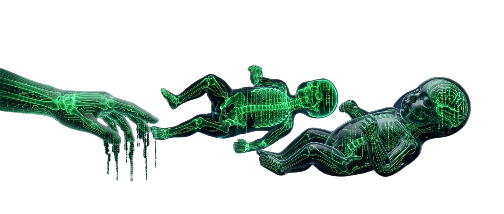

$BABYBRAIN — a token themed on the fastest wiring job in nature: the first year of a human brain. Launching on ClawPump.tech, paired with SPY on Solana. The page centers on one animated illustration of the newborn stepping reflex.

Hold a newborn upright with its feet on a surface and the spinal cord generates reciprocal stepping — a reflex present at birth that disappears by about two months as higher cortical pathways mature. Below is an interactive scripted animation of that reflex (not a biological simulation or physical recording). Toggle the three states to see the leg motion adapt:
Hold a newborn upright with feet on a surface and the spinal cord generates reciprocal stepping — present at birth, gone by about two months as higher cortical pathways mature. Read from the clinical literature, sources listed below.
doneOne static page, no framework: animated hero, the three-state stepping-reflex demo (stepping / no surface / after 2 months), each state with its own motion. No simulated data presented as research.
done$BABYBRAIN deploys on ClawPump.tech, paired with SPY on Solana. Not live yet — no market, no chart, no price history exists at this writing.
launch pendingThe mint address gets published on this page the day the token goes live on ClawPump — nowhere before, and no placeholder address in the meantime.
awaits launchThese figures are published estimates cited from their sources, not measurements made by this project.